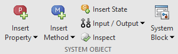
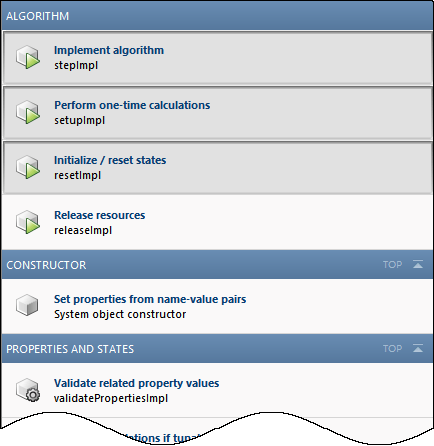
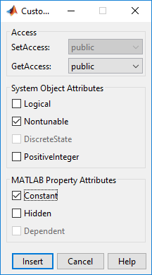

Insert System Object Code Using MATLAB Editor
Define System Objects with Code Insertion
You can define System objects from the MATLAB® Editor using code insertion options. When you select these options, the MATLAB Editor adds predefined properties, methods, states, inputs, or outputs to your System object™. Use these tools to create and modify System objects faster, and to increase accuracy by reducing typing errors. The GUI has slight difference in MATLAB online but the functionality is the same.
To access the System object editing options, create a new System object, or open an existing one.

To add predefined code to your System object, select the code from the appropriate menu. For example, when you click Insert Property > Numeric, the MATLAB Editor adds the following code:
properties(Nontunable)
Property
endThe MATLAB Editor inserts the new property with the default name
Property, which you can rename. If you have an existing properties
group with the Nontunable attribute, the MATLAB Editor inserts the new property into that group. If you do not have a property
group, the MATLAB Editor creates one with the correct attribute.
Insert Options
| Properties | Properties of the System object: Numeric, Logical, Enumeration, Positive Integer, Tunable Numeric, Private, Protected, and Custom. When you select Enumeration or Custom Properties, a separate dialog box opens to guide you in creating these properties. |
| Methods | Methods commonly used in System object definitions. The MATLAB Editor creates only the method structure. You specify the actions of that method. The Insert Method menu organizes methods by categories, such as Algorithm, Inputs and Outputs, and Properties and States. When you select a method from the menu, the MATLAB Editor inserts the method template in your System object code. In this example, selecting Insert Method > Release resources inserts the following code: function releaseImpl(obj) % Release resources, such as file handles end If a method from the Insert Method menu is present in the System object code, that method is shown shaded on the Insert Method menu:  |
| States | Properties containing the |
| Inputs / Outputs | Inputs, outputs, and related methods, such as Validate inputs and Disallow input size changes. When you select an input or output, the
MATLAB Editor inserts the specified code in the function y = stepImpl(obj,u,u2) % Implement algorithm. Calculate y as a function of % input u and discrete states. y = u; end |
Create a Temperature Enumeration
Open a new or existing System object.
In the MATLAB Editor, select Insert Property > Enumeration.
In the Enumeration dialog box, enter:
Property Name with
TemperatureUnit.Enumeration Name with
TemperatureUnitValues.
Select the Create new enumeration check box.
Remove the existing enumeration values with the - (minus) button.
Add three an enumeration values with the + (plus) button and the following values:
FahrenheitCelsiusKelvin
Select
Fahrenheitas the default value by clicking Default.The dialog box now looks as shown:

To create this enumeration and the associated class, click Insert.
In the MATLAB Editor, an additional class file with the enumeration definition is created. Save the enumeration class definition file as
TemperatureUnitValues.m.classdef TemperatureUnitValues < int32 enumeration Fahrenheit (0) Celsius (1) Kelvin (2) end end
In the System object class definition, the following code was added:
properties(Nontunable) TemperatureUnit (1, 1) TemperatureUnitValues = TemperatureUnitValues.Fahrenheit end
For more information on enumerations, see Limit Property Values to Finite List.
Create Custom Property for Freezing Point
Open a new or existing System object.
In the MATLAB Editor, select Insert Property > Custom Property.
In the Custom Property dialog box, under System Object Attributes, select Nontunable. Under MATLAB Property Attributes, select Constant. Leave GetAccess as
public. SetAccess is grayed out because properties of type constant cannot be set using System object methods.
Click Insert and the following code is inserted into the System object definition:
properties(Nontunable, Constant) Property endReplace
Propertywith your property.properties(Nontunable, Constant) FreezingPointFahrenheit = 32; end
Add Method to Validate Inputs
Open a new or existing System object.
In the MATLAB Editor, select Insert Method > Validate inputs.
The MATLAB Editor inserts this code into the System object:
function validateInputsImpl(obj,u) % Validate inputs to the step method at initialization end